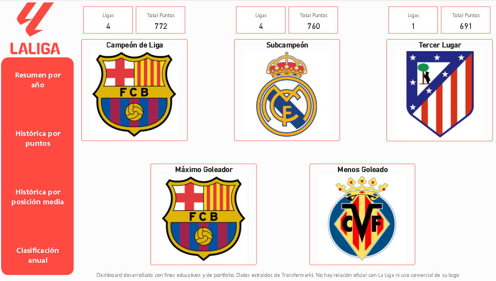

Contexto
Dataset de las clasificaciones históricas de LaLiga, incluyendo información de los últimos 10 años. Objetivo: analizar la evolución de los equipos, sus puntos, goles y posiciones para obtener insights sobre rendimiento histórico y tendencias.
Objetivos del análisis
- Analizar la clasificación histórica de los últimos 10 años en términos de puntos, goles y posición media.
- Identificar los equipos más consistentes y los más irregulares.
- Evaluar el rendimiento de los máximos goleadores y los equipos menos goleados.
- Facilitar la visualización de las clasificaciones anuales y la comparación entre temporadas.
Estructura del Dashboard
- Resumen por año: filtro por temporada, escudo del campeón, máximo goleador, equipo menos goleado y 3 descendidos.
- Clasificación histórica por puntos: suma de todos los indicadores de los últimos 10 años, con tooltip de evolución anual.
- Clasificación histórica por posición media: posición media, goles a favor y en contra, puntos promedio y tooltip de evolución anual.
- Tabla de clasificaciones anuales: permite filtrar por temporada y ver la clasificación final de cualquier año.
Técnicas y herramientas
- Power BI: dashboards interactivos con filtros y tooltips.
- DAX: cálculos de puntos totales, promedio de goles y posición media.
- Power Query: limpieza y transformación de datos.
Dataset
Fuente: Transfermarkt - LaLiga
Incluye clasificaciones, goles a favor, goles en contra, puntos y posiciones de los últimos 10 años.
Principales insights
- Barcelona lidera ambas clasificaciones históricas, con 12 puntos sobre el Real Madrid y diferencia de 0,11 en posición media.
- El Villarreal es el equipo menos goleado en la última década.
- Posiciones de clasificación histórica por puntos y posición media no siempre coinciden, mostrando irregularidad de algunos equipos.
- Equipos como Sporting o Málaga solo han estado 1 o 2 temporadas en primera división en la última década.
- Evolución de puntos y posiciones permite identificar equipos consistentes frente a equipos con rendimientos fluctuantes.
Visualizaciones
Página 1 – Palmarés
Página 2 – Resumen por año